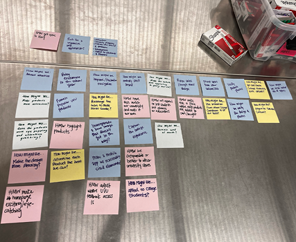
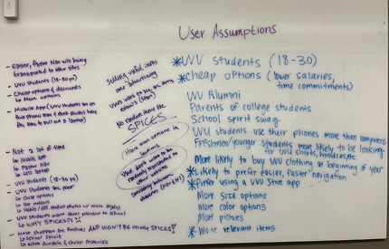
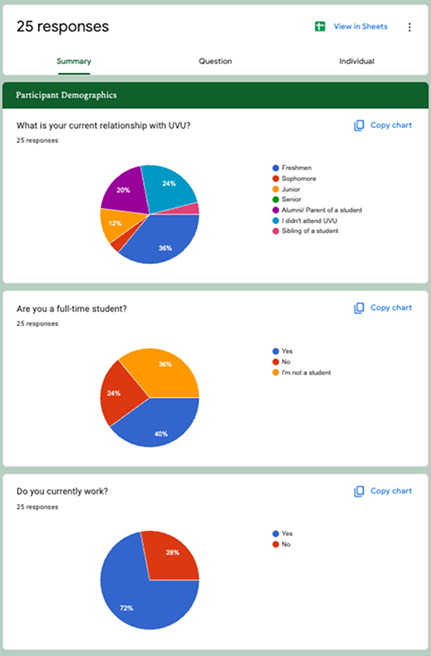
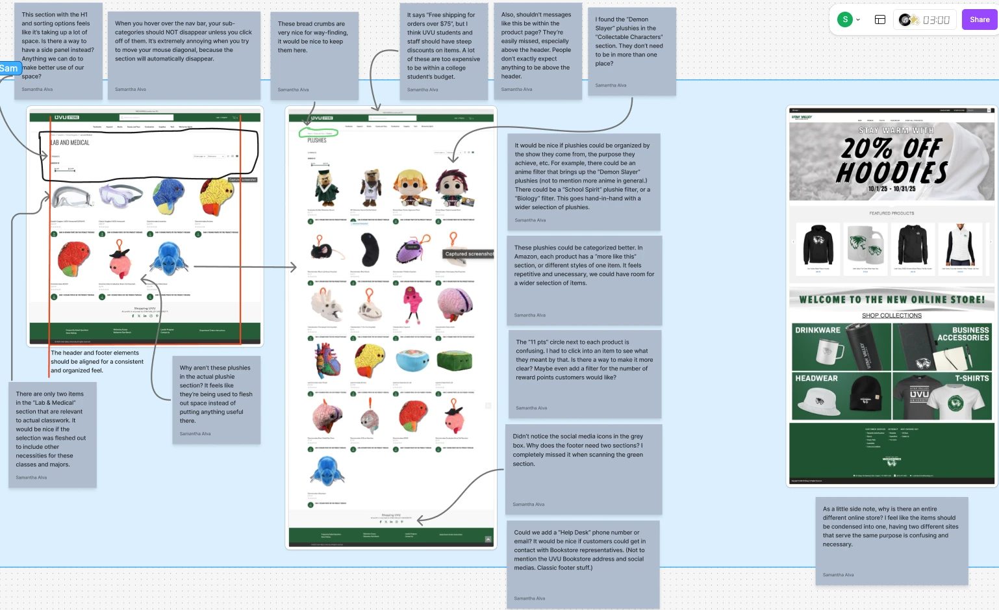
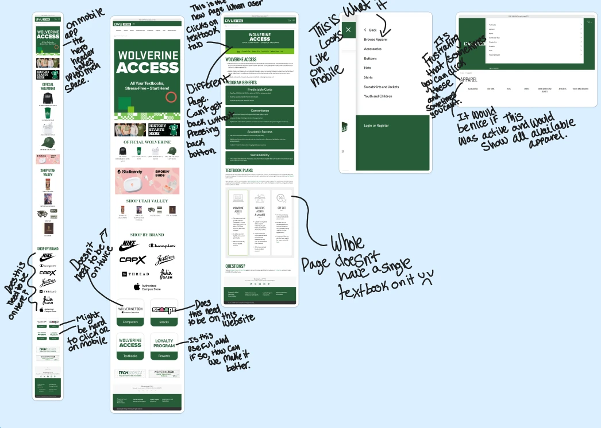
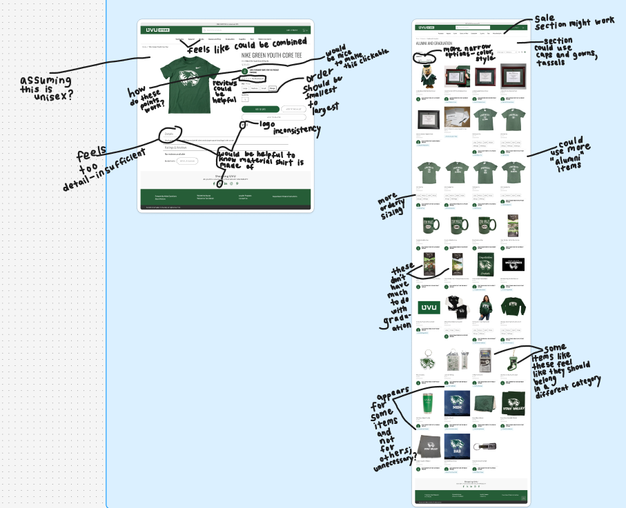
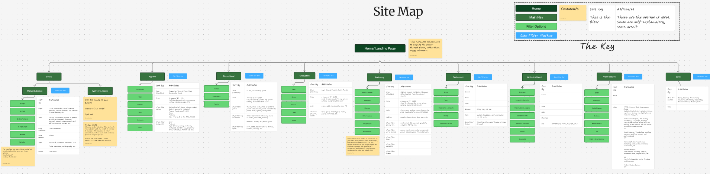
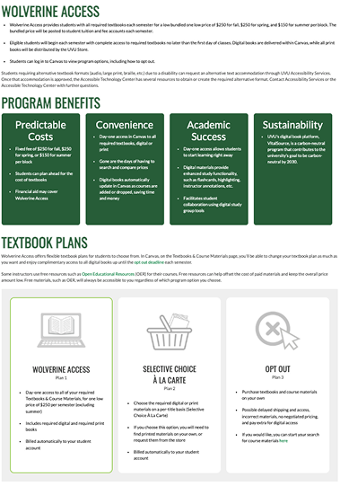
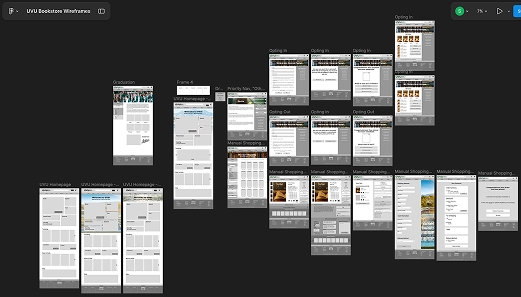
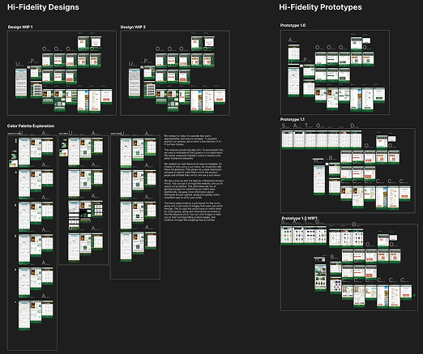

Eliminating Painpoints: A redesign for the UVU Bookstore Site
Project Overview
We had never designed for a client before. That changed last semester, when I took the Interaction Design class (DWDD2410). We worked with a client and designed multiple iterations with real feedback from users. This client was the main stakeholder for the UVU Bookstore site. I was excited because this website was created for our college. I could personally feel the impact of our work. Through multiple interviews and an extremely successful survey, we identified pain points and reimagined a site that was vastly different. We also designed an entire new user flow for Wolverine Access, making it easier for students to opt in and out of the service. While this was the most imaginative portion of our work, it wasn’t the only thing we changed. We were dreaming big. There were a lot of roadblocks throughout this project, but we managed to pull-through and deliver powerful results.
Research Makes the Dream Work
To better understand our users and the challenges they faced with the current site, we interviewed Matt, the Director of Licensing for the UVU Bookstore. His goals were to streamline navigation, increase sales, and improve the site’s messaging and visual design. The primary audience consisted of UVU students, who mainly visited the site to purchase textbooks and university merchandise. One challenge quickly became clear: the site relied on the Netsweep platform, which limited both filtering functionality and design flexibility. As a result, the site suffered from misleading terminology, confusing navigation, and frustrating user flows—especially during checkout. Our team also worked within several constraints: the UVU design system, a single semester timeline, and no budget. After the interview, we began exploring user needs through a series of “How Might We” questions, focusing on engagement, responsiveness, and clearer navigation. We divided the research workload. I served as project manager, coordinating communication while also creating a Google Forms survey following a class whiteboard session on user assumptions. Partway through the semester, one teammate left the class, so the remaining three of us redistributed responsibilities and continued the project. Survey results showed that most respondents were students aged 18–30 who primarily visited the bookstore for textbooks, school supplies, and UVU merchandise. Convenience, affordability, and fast navigation were consistent needs across responses. Many participants also emphasized the importance of mobile responsiveness and competitive pricing. Users reported difficulty finding products due to weak filtering, inconsistent categorization, and confusing navigation. They also wanted more school-specific merchandise, clearer product photos, and stronger representation of school spirit. Overall, our research confirmed many of our early assumptions and highlighted the need for clearer messaging, improved navigation, and a simpler checkout experience.



Avengers Assemble!
To better observe how users interacted with the site, our team conducted usability interviews and recorded participants navigating the UVU Bookstore website. Each team member interviewed one participant and documented insights in a shared research document. Overall, users felt the site was functional but frustrating and poorly organized. Most participants were eventually able to find what they needed, but the process was extremely unintuitive. Navigation issues appeared in nearly every session, with users attempting to click headers or images that appeared interactive but were not. One major discovery involved textbook purchasing. Students expected to buy textbooks directly through the bookstore site, but the process actually redirected them to Wolverine Access, creating a confusing break in the user journey. Browsing products created additional friction. Apparel searches were inconsistent, alumni merchandise felt limited, and some items appeared in unrelated categories. Participants also questioned the presence of novelty products when common school supplies were harder to find. Product pages lacked important details such as size options, reviews, or apparel displayed on models, making it difficult for users to evaluate purchases. While the rewards program was appreciated, participants struggled to understand how it worked due to unclear messaging. These usability interviews reinforced findings from our earlier heuristic evaluation and highlighted several opportunities for improvement.
Key Insights
Navigation was misleading: Users frequently attempted to click headers and images that appeared interactive.
The textbook purchasing flow was disconnected Students expected to purchase textbooks directly through the bookstore site, and got confused when images didn't take them where they wanted to go.
Product discovery was inconsistent: Weak filtering and categorization made products difficult to locate.
Product information was incomplete- Missing details such as size options, reviews, and model photos made purchasing decisions harder.
Pricing and selection frustrated students: Participants wanted more practical school-related products and more affordable options.



Initial Design Mockups

To address navigation issues discovered during research, we redesigned the site structure and introduced a filtering system similar to large e-commerce platforms. This allowed users to browse products more easily without relying on fragile submenus.
One major focus was the Textbooks section. On the existing site, the textbook page appeared to contain navigation buttons, but they were actually static images that did not link to the purchasing process. Instead, textbook purchasing occurred through Wolverine Access.
To improve this experience, I proposed two options for students:
Manual textbook browsing through the bookstore site for price comparison.
Direct access to Wolverine Access for automated textbook purchasing.
I also designed a Wolverine Access Hub, where students could view charges, access current and previous textbooks, and easily opt in or out of the program. While I focused on the site map and textbook flow, my teammates worked on checkout flows, shopping pages, and the homepage. Our first design iteration reflected this collaborative effort. As the project progressed, our team size changed again and Savannah and I took on additional design responsibilities. To stay organized as the project grew, I created a structured Figma file using the Pages feature to document prototypes, design explorations, and feedback chronologically.



Avengers Assemble... Again?
After completing our first design iteration, Savannah and I built an interactive prototype and conducted another round of usability interviews with UVU students. My interview session lasted about 40 minutes and revealed several opportunities for improvement. Participants noted that buttons needed clearer placement and should not repeat across sections. The Wolverine Access Hub also needed to be easier to locate, as users struggled to find it during testing. Participants suggested simplifying the checkout experience by merging sections so the process felt more like a single receipt rather than multiple fragmented steps. Visually, users recommended wider margins, less crowded product pages, and more consistent product card layouts. Suggestions such as hover states and clearer “Add to Cart” buttons would make product interactions more intuitive. Key Feedback
Wolverine Access was difficult to find: Users suggested prioritizing textbook browsing and relocating the hub.
Labels needed clarification: Terms like “Manual Shopping” confused users. “Textbooks” felt clearer.
Pages felt visually dense: Users recommended smaller hero images, stronger headers, and more spacing.
Product interactions lacked consistency: “Add to Cart” buttons varied in size and visibility. Checkout could be simplified: Highlighting the total price and reducing scrolling would improve clarity.
Using this feedback, Savannah and I continued iterating on the design. I focused on interaction details such as hover states and prototype organization, while Savannah curated imagery and visual assets across the site. Through several iterations, we refined the experience into a cleaner and more intuitive bookstore interface.